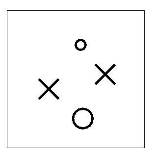
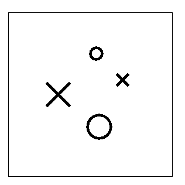
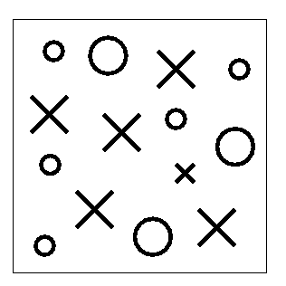
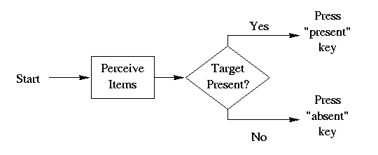
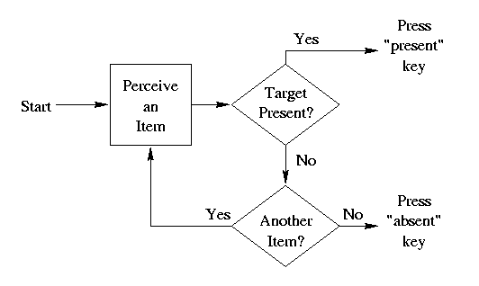

Introduction. Imagine you have entered football stadium, just before gametime. The seats are mostly full, and you need to find your friends who have already arrived. They might be anywhere in the stadium, so you have to visually search for them. Suppose that they are I.U. fans, wearing red and white clothes, sitting somewhere on the I.U. side. Do you think it would be easy to spot them? Probably not: You would have to look at each person, one by one, to check whether he or she was one of your friends. Suppose instead that your friends, wearing red and white, were sitting on the other team's side, whose school colors are, say, blue and yellow. Do you think it would be easy to spot your friends? Probably, because their red would "pop out" of the blue and yellow background.
Thus, it seems that when we need to search for a unique feature among other different features (e.g., red among blue and yellow), the search is easy and we don't need to pay attention to individual items (people). But when we need to search for a conjunction of features (e.g., a particular combination of facial features) among a sea of similar items (other people with faces), the search is difficult and we need to pay attention to each item (person) one at a time.
These kinds of visual search situations can be brought into the laboratory and studied under controlled conditions. A popular experimental method used for studying visual attention and pattern recognition is called the "visual search paradigm". In this paradigm, participants are shown a display of items, such as large or small X's and O's like those shown at the left. The viewer has to search the display for one particular type of item, called the "target", such as the small "x", and indicate as quickly as possible whether or not this target is in display. Typically the viewer indicates his or her response by pressing a key if the target is present, and pressing a different key if the target is absent.
The displays are presented to the viewer suddenly, and the experimenter measures the time it takes for the viewer to carry out her visual search and respond. Participants are told to maintain high accuracy, so the crucial dependent variable (D.V.) is response time (RT).
There are at least three independent variables (I.V.'s) that are of interest in visual search tasks. One is whether the target is present or absent. A second I.V. is the number of items in the display. The diagram below shows examples of displays in which the target (a small "x") is absent or present, with low (4) or high (14) number of items in the display.
| 4 Items | 14 Items | |
|
Target Absent |
 | |
|
Target Present |
 |  |
A third I.V. is the relation of the target and distractor items. For example, the target might be a small "x", as above, but instead of having distractors that could be small or large X's or O's, the distractors might be just small x's or small o's. This I.V. is sometimes called "feature vs. conjunction search". It is analogous to looking for an I.U. fan in the other team's side vs. looking for the I.U. fan on the I.U. side. Prof. Kruschke will discuss feature vs. conjunction search in more detail in lecture. It will not be manipulated in this homework assignment.
Goal. The specific goal for this homework assignment is for you to derive predicted response time graphs for two different simple theories of visual search. In lecture, we'll learn about results from actual experiments, so we can see which theory better fits real human performance. The more general goal of this assignment is for you to better understand theories and their relation to data in cognitive psychology.
The two theories. Professor Kruschke emphasizes that a theory must specify both the representation of information and the process that acts on the representation. The two theories presented here are not very explicit about the representations they assume, and instead the emphasis is on the different processes they assume. (In class, however, we'll learn about two different levels of representation, namely pre-attentive features and post-attentive patterns, hypothesized in feature integration theory.) For this homework, you'll be deriving predictions for two different kinds of processing.
Theory 1: "Parallel" Processing of All Items. It's possible that when a display of items is presented, the viewer can perceive all the items simultaneously, "in parallel." According to this idea, it doesn't matter how many items are in the display; they can all be seen simultaneously in the same amount of time (so this theory is sometimes called an "unlimited capacity" model). This seems to happen when searching for a red-clad I.U. fan in the other team's side: The I.U. fan "pops out" no matter how many other people are in the stands.
|  |
A flowchart of this processing is shown above. Each stage in the flowchart takes a certain amount of time. In particular, the time taken to get through the "Perceive Items" box is the same no matter how many items are in the display.
Theory 2: Serial Processing of Items. Alternatively, it's possible that viewers can only perceive one item at a time. Each item must be checked, one at a time, to see whether it's the target or not. This seems to happen when searching for the red-clad I.U. fan in the I.U. side of the stadium.
|  |
A flowchart of this processing is shown above. This flowchart does not indicate which items get searched in what order, nor how the viewer keeps track of which items have already been checked. We'll simply assume that the viewer checks items at random, with each item mentally marked once it's been checked. Each stage in the flowchart takes a certain amount of time. In particular, the loop of arrows, from "Perceive an Item" through "Target Present?" and finally through "Another Item", takes extra time for every additional item that needs to be checked. In this flowchart, we assume that if an item is checked and it turns out to be the target, then further checking of items is immediately stopped and the "present" key is pressed. Because of this automatic stopping mechanism, this kind of serial processing is called self-terminating. (We'll encounter a different kind of serial search, called "exhaustive", when we study short-term memory.)
Compute the predicted response times. You need to determine the mean response times predicted by the two theories, for each of the four displays shown in the Introduction. To make the numbers concrete, we'll suppose that each stage in the flowcharts above takes a certain amount of time, as follows:
| Stage | Time in msec |
| Start | 400 |
| Perceive Items (in parallel processing) |
20 |
| Target Present? | 30 |
| Press "present" Key | 50 |
| Press "absent" Key | 75 |
| Perceive an Item (in serial processing) |
20 |
| Another Item? | 10 |
Go through the flowcharts and add up the time taken by each stage until a response is made. The tables below have the stages listed in order, so you can easily add up the durations of each stage. Use the tables below to compute the predicted response times. Carefully fill in all the blanks.
|
|
||||||||||||||||||||||||||||
|
|
||||||||||||||||||||||||||||
|
|
||||||||||||||||||||||||||||||||||||||||||||||||||||||||||||
|
|
||||||||||||||||||||||||||||||||||||||||||||||||||||||||||||
Careful! The only somewhat tricky part is figuring out the response time for serial processing when the target is present (the last two tables above). The are two reasons that this is tricky, which we will consider in turn:
First, consider how many items need to be searched when the target is present. The viewer might get lucky and find the target on the first item she searches, or she might be unlucky and search every other item before finally finding the target. This is why the tables say, for instance, "Iterate loop 1 to 4 times". On average, the viewer will get through half the items before she finds the target. For example, when the target is present and there are 4 items, on average 2.5 items must be checked to find the target, because 2.5 is the mean of 1, 2, 3 and 4. In general, if there are N items, the mean number of items checked is (1+2+...+N)/N. You should compute the mean time required to find the target.
Second, consider what happens once the target is found. When this happens, it is no longer necessary to check for "Another Item?". Therefore, on average, the stages "Perceive an Item" and "Target Present?" are processed (1+2+...+N)/N times, but the stage "Another Item?" is processed [(1+2+...+N)/N]-1 times. Use these average numbers of iterations to determine the predicted mean response times.
Make graphs of the predicted response times. Blank graph templates are provided below, one for plotting the predicted RTs of the parallel processing theory, and the other for plotting the predicted RTs of the serial processing theory. The vertical axis is the dependent variable. The horizontal axis should be the independent variable, number of items. Your graphs should have separate lines for each value of the other independent variable, target present or absent. Thus each graph should plot four points, one point for each of the four display examples above. Connect the points within a graph that refer to target present, and connect the points within a graph that refer to target absent. Important: Label all the axes, label the tic marks on the axes, and label the lines you plot.
| Parallel Processing | Serial Processing |
|
|
|
So what? What does this tell us about perception? We'll find out in lecture that people's search times are best fit by the parallel processing theory for some types of displays, but best fit by the serial processing theory for other types of displays. By carefully considering which types of displays seem to be processed in parallel and which types seem to be processed serially, we can make inferences about what sorts of visual features are perceived pre-attentively, and what other sorts of visual patterns require attentive processing to be recognized.
The issue of parallel versus serial processing will arise again later, in the topic of short-term memory scanning.
To learn more: Take a look at the very readable article by Anne Treisman, Features and objects in visual processing, Scientific American, November 1986, Volume 255 Number 5, Pages 114B-125.
Grading criteria. This homework assignment is worth up to 15 points. Points are deducted for inaccuracies or omissions. (Click here to read the Late Policy.)
What do you think of this assignment? Only after the lecture discussing this topic, please provide your evaluation of this assignment. To fill out an evaluation form and get 2 points for your effort, click here.
Copyright © 1997, 1998 by John K. Kruschke